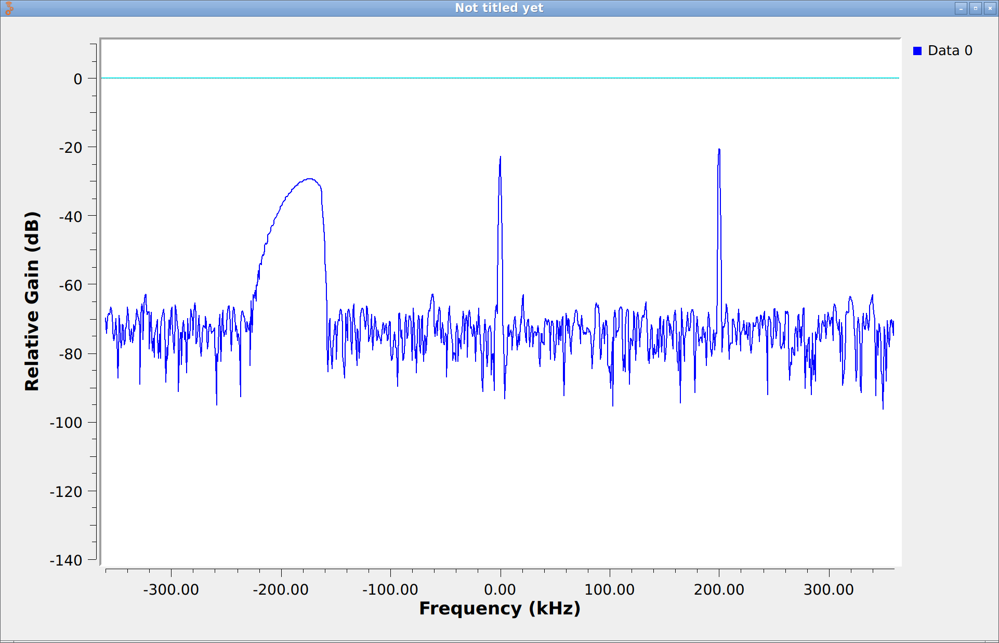

Тема 3. Відповіді
Вправа № 1. Простежте сигнал у приймачі
Крок 1. За порядком, від антени до екрана: Б, Г, А, Д, В. Блок упізнають за тим, що до нього надходить і що з нього виходить: такі самі рисунки стоять між блоками на рис. 3.2.
| Блок | Назва (крок 1) | Який за порядком (крок 1) | Що до нього надходить (крок 2) | Що з нього виходить (крок 2) | Що з ним зробити (крок 4) |
|---|---|---|---|---|---|
| А | АЦП | третій | підсилений сигнал вибраної смуги | числа замість сигналу | залишити без змін |
| Б | Антена | перший | радіохвилі всіх передавачів | слабкий електричний сигнал | замінити |
| В | Комп’ютер | п’ятий | вибрані канали | спектрограма, звук, запис | налаштувати по-новому |
| Г | Радіочастотна частина | другий | слабкий електричний сигнал | підсилений сигнал вибраної смуги | налаштувати по-новому |
| Д | ПЛІС | четвертий | числа замість сигналу | вибрані канали | налаштувати по-новому |
Крок 2. Що надходить до кожного блока і що з нього виходить, показано в таблиці: це підписи під рис. 3.2. Довжину хвилі в метрах дає правило з теми 2: 300 ділять на частоту в мегагерцах. 300 / 300 = 1 м. Півхвильовий диполь удвічі коротший: 1 / 2 = 0,5 м, тобто 50 см.
Крок 3. Перша несправність: антена. Вітер повернув спрямовану антену, і тепер вона найкраще приймає з іншого напрямку. Тому сигнал радіостанції зник, а з нового напрямку з’явилися інші сигнали. Друга несправність: радіочастотна частина. Потужний передавач поруч перевантажив радіочастотну частину: сигнали спотворилися, і на спектрограмі з’явилися сигнали, яких в ефірі немає (пункт 3 теми). Тут зараховують і відповідь «АЦП»: надто сильний сигнал АЦП записує найбільшим зі своїх чисел, і сигнал теж спотворюється. Третя несправність: комп’ютер, точніше його диск. Секунда запису займає 100 МБ (контрольне запитання 4). На диску було вільно 4 ГБ, тобто 4000 МБ: 4000 / 100 = 40 с. На 40-й секунді вільне місце закінчилося.
Крок 4. Антену замінюють: кожна антена поста розрахована на свої частоти, а нова хвиля приблизно у 8 разів коротша. Радіочастотну частину налаштовують по-новому: вона переставляє свою смугу завширшки 20 МГц на частоти біля 2440 МГц. АЦП залишається без змін: вибрану смугу, як і раніше, переносять на нижчу частоту, тож до АЦП надходять коливання тих самих частот. ПЛІС налаштовують по-новому: сигнал пульта займає десятки мегагерців і стрибає по всій цій смузі (таблиця «Портрети сигналів» теми 2), тож канали по 25 кГц для нього не годяться. З’єднання між схемами ПЛІС розробник може змінювати. Комп’ютер налаштовують по-новому: його програма має відновлювати повідомлення із сигналу пульта, а не голос із сигналу радіостанції. Довжина хвилі нового сигналу: 300 / 2440 = 0,123 м, тобто 12,3 см. Диполь удвічі коротший: 12,3 / 2 = 6,15, тобто близько 6 см.
Учителеві. У кроці 4 «налаштувати по-новому» означає і змінити програму: блок при цьому залишається. Зараховують і відповідь, що антену не замінюють, а перемикають приймач на іншу антену поста: головне, що антена, яка приймала радіостанцію, для нового сигналу не годиться.
Учителеві. Сигнал пульта складається з коротких сплесків завширшки 1 МГц, які стрибають у смузі завширшки 83,5 МГц. Приймач поста бере одразу 20 МГц: 20 / 83,5 = 0,24, тобто близько чверті. Стрибків у решті смуги пост у цю мить не приймає. Тема про це не каже, тож учні цього знати не мусять.
Контрольні запитання
Чим приймач РЕР відрізняється від приймача зв’язку і як це позначається на будові?
Відповідь. Приймач зв’язку заздалегідь знає частоту передавача, з яким працює. Приймач РЕР не знає, на якій частоті й коли з’явиться сигнал. Тому приймач РЕР приймає широку смугу частот одразу, має розрізняти слабкий сигнал поруч із сильним і встигати обробити всі прийняті сигнали. На будові це позначається так: АЦП має брати багато відліків за секунду, щоб перетворити на числа всю широку смугу, а ПЛІС обробляє всі канали цієї смуги одночасно. Антен такий приймач має кілька: всеспрямовану для пошуку і спрямовані для слабких сигналів.
Для якої задачі потрібна всеспрямована антена, а для якої спрямована? Як фазована антенна решітка повертає промінь?
Відповідь. Всеспрямована антена потрібна для пошуку, коли напрямок на передавач невідомий: вона приймає однаково з усіх боків. Спрямовану антену наводять на відомий передавач, щоб прийняти його слабкий сигнал: з одного напрямку вона приймає сильніше, ніж всеспрямована. Фазована антенна решітка додає сигнали своїх елементів із малими затримками. Від затримок залежить, з якого напрямку решітка приймає найкраще. Тому, щоб повернути промінь, змінюють затримки, а антена не рухається.
Скільки рівнів розрізняє АЦП поста П1, який записує відлік 12 бітами? У скільки разів ця кількість більша, ніж у приймача RTL-SDR?
Відповідь. АЦП поста П1 розрізняє 2¹² = 4096 рівнів. АЦП приймача зі вступу записує відлік 8 бітами й розрізняє 2⁸ = 256 рівнів. 4096 / 256 = 16: у 16 разів більше.
Приймач поста П1 записує 50 мільйонів відліків за секунду, по 2 байти на відлік. Скільки мегабайтів (МБ), тобто мільйонів байтів, займе секунда запису? Скільки гігабайтів (ГБ), тобто мільярдів байтів, займе хвилина?
Відповідь. Секунда запису: 50 мільйонів відліків · 2 байти = 100 мільйонів байтів, тобто 100 МБ. Хвилина запису: 100 МБ · 60 = 6000 МБ, тобто 6 ГБ.
Чому потік чисел від АЦП першою обробляє ПЛІС, а не процесор комп’ютера?
Відповідь. Смуга приймача поста П1 має ширину 20 МГц, тобто 20 000 кГц. У ній вміщується 20 000 / 25 = 800 каналів по 25 кГц, і сигнал може з’явитися в будь-якому з них. Процесор комп’ютера мусив би ділити свій час між усіма каналами й міг би пропустити коротку передачу. У ПЛІС кожен канал має власний пристрій, і всі ці пристрої працюють одночасно. Тому потік чисел першою обробляє ПЛІС, а до комп’ютера доходять лише вибрані канали.
Творчі та групові завдання
Завдання 1. Перша задача: спрямована антена (рис. 3.4, б). Напрямок на радіостанцію відомий, тож антену наводять на неї, і з цього напрямку вона приймає сильніше, ніж всеспрямована. Друга задача: фазована антенна решітка (рис. 3.4, в). Решітка повертає промінь без руху антени, тому встигає щосекунди переходити від одного передавача до іншого. Зараховують і відповідь «три спрямовані антени, по одній на кожен передавач», якщо учень зауважить, що антен тоді потрібно три, а не одна. Третя задача: всеспрямована антена (рис. 3.4, а). Про передавачі нічого не відомо, отже невідомі й напрямки на них, а така антена приймає однаково з усіх боків.
Завдання 2. Блоки схеми: «File Source» читає числа із запису; «IChar To Complex» складає з чисел запису відліки; «Frequency Xlating FIR Filter» залишає один канал: смугу однієї станції; «WBFM Receive» відновлює із сигналу станції звук; «Audio Sink» відтворює звук через динамік; «QT GUI Frequency Sink» показує спектр усієї смуги запису. Роботу ПЛІС виконує блок «Frequency Xlating FIR Filter»: з усієї смуги він залишає один канал. Роботу комп’ютера виконують три блоки: «WBFM Receive» відновлює повідомлення, «Audio Sink» відтворює його, а «QT GUI Frequency Sink» показує сигнали на екрані. На схемі немає антени, радіочастотної частини й АЦП. Їхню роботу виконано ще до запису: запис уже містить числа, які в справжньому приймачі дає АЦП. Блоки «File Source» та «IChar To Complex» лише читають ці числа.
Учителеві. Запис до завдань 2 і 3 є моделлю: його числа обчислено, а не прийнято з ефіру. У цій схемі роботу ПЛІС виконує програма, і процесор комп’ютера встигає: запис містить 720 тисяч відліків за секунду, а АЦП поста П1 дає 50 мільйонів, тобто у 69 разів більше: 50 000 000 / 720 000 ≈ 69.
Завдання 3. У записі три станції: над шумом на спектрі піднімаються три піки. Пік станції, яка в цю мить передає звук, розширюється в горб. Середня станція стоїть на частоті 0, дві інші на 200 кГц нижче і на 200 кГц вище. Ці частоти вписують у параметр «Center Frequency»: -200e3, 0 і 200e3. Нижня станція передає мелодію: чотири ноти народного мотиву, на якому Микола Леонтович побудував «Щедрик». Середня передає сигнали азбуки Морзе: літери Р, Е, Р. Верхня передає сигнали, схожі на сигнали точного часу: три короткі звуки й один довгий. Запис триває 4 с і повторюється. Про середню станцію достатньо відповіді «короткі й довгі звуки».

Учителеві. В азбуці Морзе літеру Р передають так: крапка, тире, крапка. Літеру Е передають так: крапка. Тире триває втричі довше, ніж крапка.
Завдання 4. Приклад розрахунку для станції на частоті 100 МГц. Довжина хвилі: 300 / 100 = 3 м. Диполь має половину цієї довжини, 1,5 м. Кожен із двох відрізків дроту має чверть: 3 / 4 = 0,75 м, тобто 75 см. Зараховують звіт, у якому є розрахунок для частоти своєї станції, фото або рисунок антени й опис того, як змінювався прийом, коли антену повертали.
Завдання 4, модель решітки. Промінь робить вужчим більша кількість елементів. Без затримок ширина променя така: 2 елементи 51°, 4 елементи 25°, 8 елементів 13°, 16 елементів 6°. Промінь повертає затримка між сусідніми елементами: що більша затримка, то далі промінь від напрямку прямо перед решіткою. Решітка з 8 елементів повертає промінь за затримки 0,1 періоду на 11°, за затримки 0,2 періоду на 23°, за затримки 0,3 періоду на 36°. Промінь повертається в той бік, у який зростає затримка. Повернутий промінь трохи ширший: за затримки 0,3 періоду 15° замість 13°. Причина: з напрямку променя решітку видно під кутом, тому вона здається коротшою. Коротша решітка має ширший промінь.
Учителеві. Краями променя модель вважає напрямки, з яких решітка приймає половину потужності найкращого напрямку. Крива моделі показує амплітуду сигналу, а не потужність. Потужність пропорційна квадрату амплітуди, тому на краях променя крива сягає 0,7 своєї найбільшої довжини: 0,7 · 0,7 ≈ 0,5. Учні цього знати не мусять.
Завдання 5. Готової відповіді немає: зараховують обґрунтовані думки. Для перевірки. Антена відкидає напрямки й частоти: спрямована антена слабко приймає збоку, і кожна антена розрахована на свої частоти. Радіочастотна частина відкидає все поза своєю смугою завширшки 20 МГц. ПЛІС передає комп’ютерові лише вибрані канали. Комп’ютер позначає лише те, що перевищує поріг над шумом: слабшого сигналу оператор може не помітити. Якщо відкинути забагато, розвідка пропустить сигнал: передавач в іншому напрямку, передачу на іншій частоті, слабкий сигнал під порогом. Якщо не відкидати нічого, приймач не встигне обробити потік чисел: лише секунда ефіру поста П1 займає 100 МБ.
Фільтр і перетворювач частоти
На сторінці теми всі 6 станцій радіомовлення потрапляють у смугу, коли приймач налаштовано на 98 МГц: фільтр пропускає тоді смугу від 88 до 108 МГц. Крайні станції стоять на частотах 89,2 і 106,3 МГц. Смуга завширшки 20 МГц охоплює обидві, лише коли приймач налаштовано на частоту від 96,3 до 99,2 МГц. Повзунок має в цих межах одне положення.
Аналого-цифровий перетворювач
На сторінці теми червона хвиля збігається із сигналом, коли відліків щонайменше 19: це 19 : 9 ≈ 2,1 відліку на одне коливання. За 18 відліків на коливання припадає рівно два відліки. На рисунку всі ці відліки потрапили на середину сигналу, тому вони однакові. Це правило теми: відліків має бути більш ніж два на кожне коливання сигналу.
Модель антенної решітки
На сторінці теми передавач стоїть на 30° праворуч від напрямку прямо. Без затримок сигнали передавача з 8 елементів гасять один одного: суми майже немає. Ці сигнали збігаються за затримки 0,25 періоду, яка зростає праворуч. Ось чому затримка саме така. Сусідні елементи стоять на відстані 0,5 довжини хвилі. Хвиля приходить справа, і до кожного наступного елемента ліворуч їй треба пройти на 0,5 · sin 30° = 0,25 довжини хвилі більше. Одну довжину хвилі вона проходить за один період, тому до цього елемента вона доходить на 0,25 періоду пізніше. Решітка затримує сигнал кожного наступного елемента праворуч на 0,25 періоду довше. Так решітка вирівнює цю різницю, і сигнали збігаються.
Сторінка показує тоді промінь на 29° праворуч, а не на 30°. Причина: кожен елемент приймає збоку слабше, ніж прямо перед собою. Тому найкращий напрямок решітки стоїть трохи ближче до напрямку прямо, ніж передавач.
Як читати криву. Найкращий напрямок завжди сягає півкола, тому за різних налаштувань порівнюють лише форму кривих. Малі пелюстки біля решітки показують напрямки, з яких решітка теж трохи приймає.